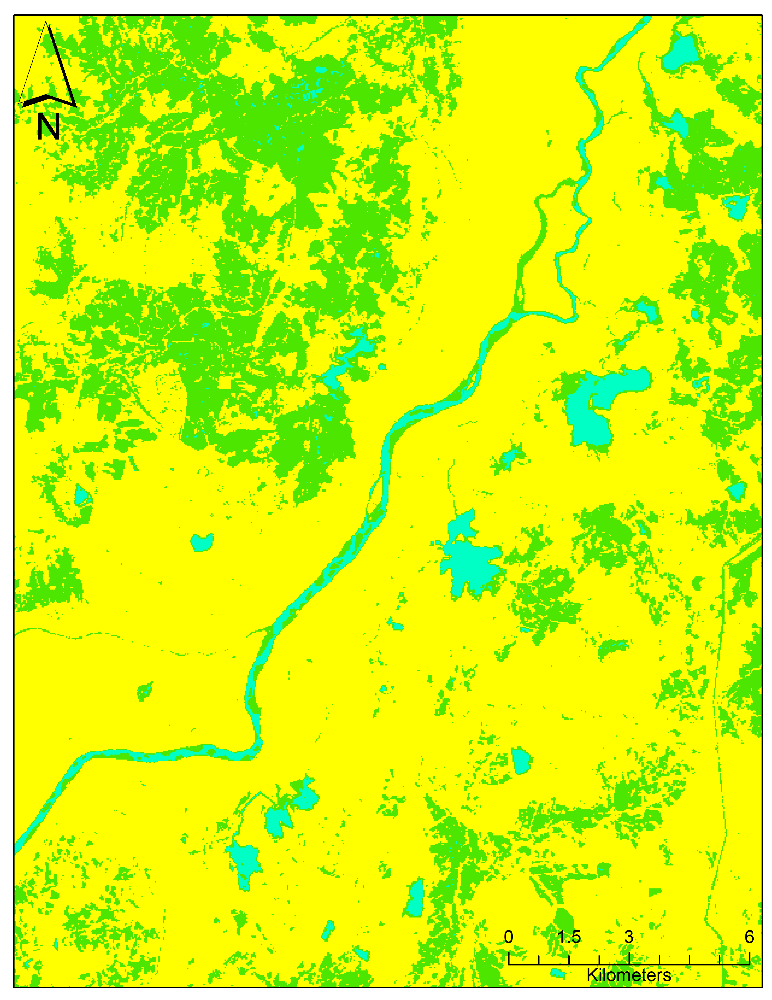
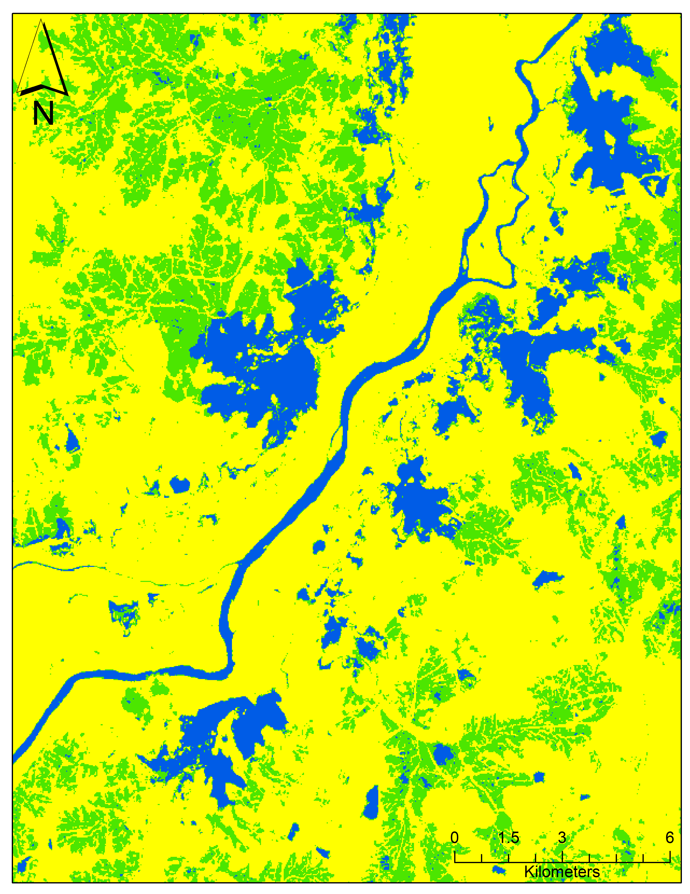
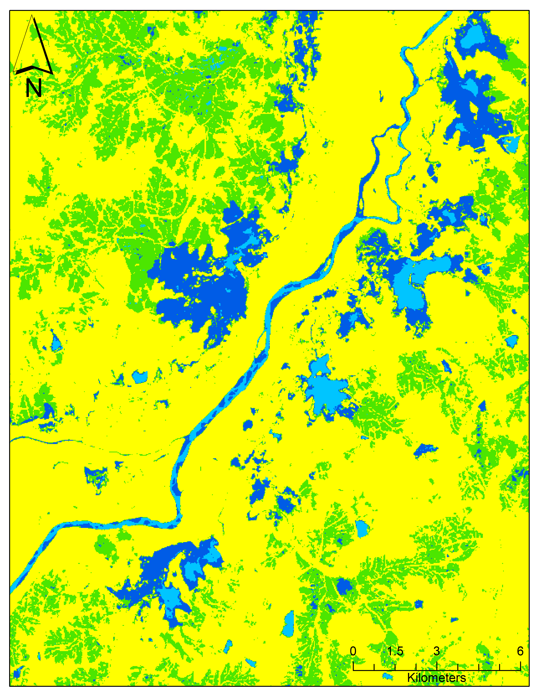
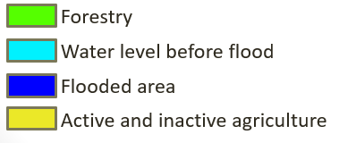
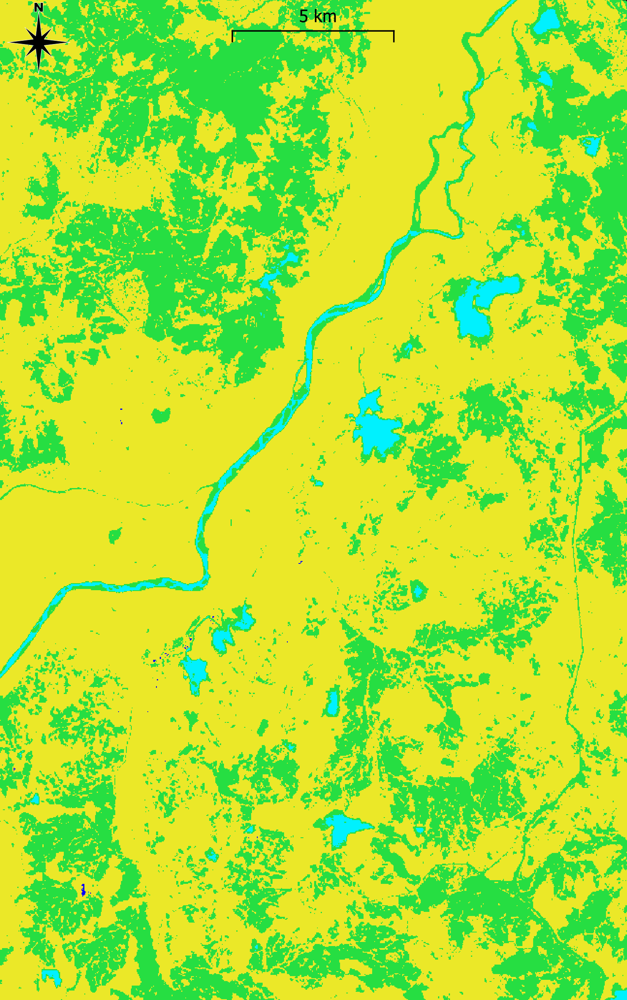
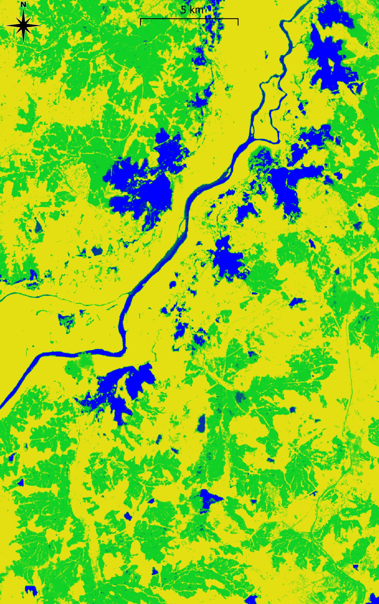
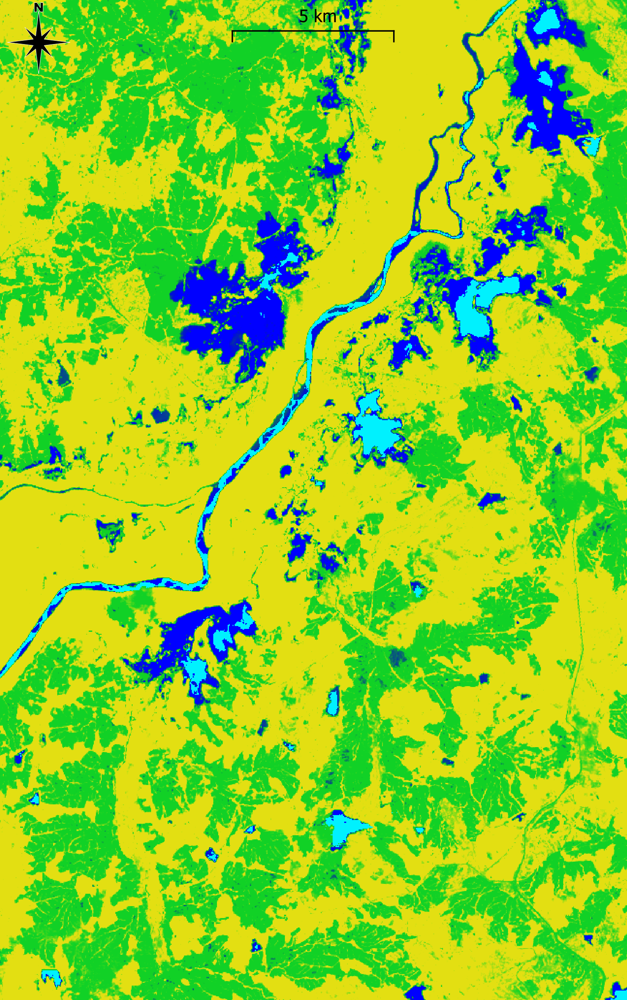

Documentation On Working With Normalized Difference Water Index In QGis and ArcGIS For Flood Monitoring And Its Higlights On Open And Fair Science Practices#
Mdluli Kolunga Nkosinathi
Abstract#
Remote sensing has emerged as an irreplaceable tool for monitoring floods and accessing their impact on the environment. One widely used technique is the Normalized Difference Water Index (NDWI) which uses satellite images to detect and quantify water bodies. This work hopes to highlight also the application of the NDWI in flood monitoring and what emaphasis have been out on open science in such a field. The NDWI utilizes the spectral characteristics of water to seperate its pixels from other land cver types by using the spectral bands and calculates the NDWI to delineates water bodies. Through the use of the NDWI, flooded areas can be identified and the extent of flooded pixels can also be estimated. the accuracy of such a method has been tested world wide by varying researchers for such an exercise. The use of NDWI for flood monitoring also lays out the principles of open science practices through transparent sharing of data, methods and results which helps incubate collaboration and reproducibility which enables researchers to validate findings, compare existing methods and easily build upon existing knowledge.
Open science highlights#
Interoperable data and tools
Access to data
1. Introduction#
Flood monitoring can be regarded as one of the vital aspects of distater management and remote sensing techniques have made gathering of data much easier than insitu observations. As floods are just one of the many occuring natural distasters, their occurance cannot be prevented but loss of life can be prevented by such remote sensing techiques. More information about floods can be found on here. Freely available satellite data from satellites such as Landsat, SPOT and Sentinel can be utilized in this instance. More data about remote sensing and flood mapping can be found here. An index known as the Normalized difference Water Index (NDWI) can be utilized to delineate the flooded areas which creates a distinction between the water pixels and other land features in the area for easy mapping of pixels covered with water (Ogilvie et al.,2018)
2. Theory of NDWI#
The theoretical grounds of use of the NDWI are based on the face that the reflection from the chosen bands are significantly high enough to allow descrimination from background non water pixels. The science behind the use of the Normalized Difference Water Index (NDWI) for flood monitoring lies in its ability to exploit the spectral properties of water in satellite imagery. NDWI is based on the principle that water absorbs and scatters light differently compared to other land cover types, allowing for its differentiation and mapping.
NDWI is typically calculated using the near-infrared (NIR) and green (G) bands of multispectral satellite imagery. These bands are sensitive to the reflectance characteristics of water. The formula for NDWI is as follows:
The resulting NDWI values range from -1 to +1, where higher positive values indicate a higher likelihood of water presence. Positive values correspond to the strong reflectance of NIR light by water and the absorption of G light. On the other hand, negative values indicate the dominance of land cover types with high reflectance in the green band. In flood monitoring, NDWI is applied to satellite imagery captured during and after flood events. By calculating NDWI values for each pixel in the imagery, areas with high positive NDWI values can be identified as potential water bodies. These areas can be further analyzed and classified to determine the extent and boundaries of the flood.
NDWI is particularly effective in flood monitoring due to its sensitivity to water content and its ability to differentiate water bodies from other land cover types. It enables the detection of flooded areas, even when they are partially covered by vegetation or in urban environments. Additionally, NDWI allows for the monitoring of flood dynamics over time by comparing NDWI values from different satellite images captured during different phases of the flood event (Memon et al., 2015).
3. Tools used to process raster data#
With high end commercial and freely available software, anybody can typically do such analysis. Commercial software such as ArcMap and matlab cab be used to work with the raster from the satellites. And i cases whether the user does not have access to such commercial software, other freely available software such as QGis aand Python can be used to process the rasters. The main method of producing such data to monitor these flooded areas makes use of the Normalized Difference vegetation Index. This reporsetory would like to stick to use of Landsat imagery to do flood monitoring using the NDWI, by using Band3 (Green) and Band5 (Near infrared).


4. Satellite data sources - Landsat#
Global freely avaialable satellite data can be retrieved from the United States Geological Survey website where users can choose from Landst1 to the latest mission Landsat 9. For the calculation of the NDVI we only require the Green and Near Infrared band.
Access to data
4.1 Downloading from USGS website#
To download data from the site, users have to create a free account and then choose the desiredd data sets and time perod of the data set. More details on how to create an account and download the data can be gathered from the following Youtube video
4.2 Use of Amazon web services#
Depending on the satellite data used, amazon web services can be used to enable cloud access of the satellite imagery without the need for users to actually download the dat into their computers which enables easier access from any internet connected device from anywhere. Unfortunetely for landsat imagery, such services require access by payment from the amazon web services, but for other satellite data like sentinel 1, such data can be access without payment or user login (Amazon web services, 2023)
The below list shows some of the satellite data which is freely available from designated sites:
The below will be some of those which can also be accessed through the cloud from Amazon Web Services;
4.3 More access to geographic data#
Users can make use of freely available earth imagery to get a closer view of study areas they may choose to study for flooding using google earth platform. Once users have geographic coordinates of the places they seek to study, they can enter their central coordinates to get access to a satellite view of that particular study area. Users can resort to free Google earth services to get a better view with much more options and more tools
5. Calculating NDWI in ArcGIS#
The following will briefly lay out the methodology of calculating the NDWI using ArcGis using the green and near infrared band.
 The steps can be summarized as below after adding the raster data:
The steps can be summarized as below after adding the raster data:
The addition of the float in the formula is because the NDWI gives value between 1 and -1 and so their floating point values.
\(NDWI = float(Band3 - Band5) / float(Band3 + Band5)\)#
6. Calculating NDWI in QGis#
The following will briefly lay out the procedure for calculating theNDWI using freely availablle QGis using the Green and Near Infrared bands. After adding the raster data the Raster calculator can be used to do the NDWI calculationand this can be accessed from the QGis tab. Thereafter you can enter the bands to be used and the output raster location and choose the color of the output map as desired.
7. Generated results#
The data set use for the analysis was from a flood event in Sri Lanka on 18 May 2016 as captured by the Landsat 8 satellite on the same date mentined. The Landsat data used is is as below, for before and after flood event:
LC08_L1TP_141055_20160502_20200907_02_T1
LC08_L1TP_141055_20160518_20200907_02_T1
The results below show the maps of the generated NDWI from landsat 8 data. The first row of image resultswill be those generated by QGis. the details of the color classes are described below the maps. On the second row is the same data set but calculated using a commercial tool of ArcGis. As can be seen from the maps generated, the same results could be derived from both free and open QGis and commercial ArcGIS and these would show some of the high standards that open tools have and can peform as mush as commercial tools. In order to show a better result of the inundated pixels, the exercise chose to classify the pixels for better understation using same number of classes for both ArcGIS and QGis results.
Results from ArcGIS#
  

Results from QGIS#
  
Total area of flood pixels#
The area under inundation can be seen by overlaying the imagery from past non flooded days into the imagery of flooded days to find the total extent of the flooded areas.
Another method would be to find the total area of the flooded pixels, the total number of pixels in the water area which would be derived from the raster data and these can be multiplied by the resolution of the imagery which is 30 m by 30 m for the landsat imagery. The size of the each cell can be retrieved from the raster layer properties under sourse and cell size. This can be achieved by using the Iso Cluster Unsupervised Classification provided in raster processing tools or software.
\(Total\) \(water\) \(area\) \(=\) \(number\) \(of\) \(water\) \(pixels\)\(*(30 m*30 m)\)#
8. Discussion#
The NDWI is a widely used remote sensing index for flood events. NDWI leverages the spectral characteristics of water in near-infrared (NIR) and green (G) bands to differentiate water from other land cover types. By quantifying the water content in an area, the NDWI can provide valuable insights into the extent and dynamics of floods.
One of the significant advantages of NDWI is its ability to utilize freely available Landsat satellite data, which has been made accessible through open science practices. Landsat satellites provide consistent and high-quality multispectral imagery, allowing for long-term monitoring and analysis of flood events. Open science practices, such as data sharing and open-source software, have facilitated the widespread adoption of NDWI and enhanced collaboration among researchers and practitioners (Zheng et al., 2015)
The use of NDWI in flood monitoring offers several benefits. First, it enables the identification and delineation of water bodies, aiding in flood extent mapping and flood risk assessment. The index can be applied to multiple satellite images captured over time to monitor the progression of flood events and assess changes in water levels. This information is crucial for disaster management and emergency response planning.
Furthermore, the use of open science practices for Landsat data promotes transparency and reproducibility. Researchers can freely access and analyze Landsat data, ensuring the transparency of data sources and methodologies. Open-source software, such as QGIS or commercial ones like ArcGIS, provides powerful tools for processing and analyzing large-scale satellite imagery, making it accessible to a broader community of users.
9. Conclusion#
In conclusion, NDWI, coupled with open science practices for Landsat data, plays a vital role in flood monitoring. It enables accurate and timely assessment of flood events, supports decision-making processes, and fosters collaboration among researchers and stakeholders. The use of NDWI and open science practices contributes to more effective and informed flood management strategies, enhancing our understanding of these natural disasters and facilitating resilience in flood-prone regions. Ultimately, the use of NDWI from Landsat 8 within the framework of open science principles provides a robust foundation for evidence-based decision making, sustainable water management practices, and informed policy development. It enables a broader community of researchers, policymakers, and stakeholders to actively engage in water resource studies and collectively work towards the preservation and sustainable use of water resources.
10. References and further reads#
Gorelick, N.; Hancher, M.; Dixon, M.; Ilyushchenko, S.; Thau, D.; Moore, R. Google Earth Engine: Planetary-Scale Geospatial Analysis for Everyone. Remote Sens. Environ. 2017, 202, 18–27.
Hardy, A.; Oakes, G.; Ettritch, G. Tropical Wetland (TropWet) Mapping Tool: The Automatic Detection of Open and Vegetated Waterbodies in Google Earth Engine for Tropical Wetlands. Remote Sens. 2020, 12, 1182.
Inman, V.L.; Lyons, M.B. Automated Inundation Mapping over Large Areas Using Landsat Data and Google Earth Engine. Remote Sens. 2020, 12, 1348.
Li, J.; Tooth, S.; Zhang, K.; Zhao, Y. Visualisation of Flooding along an Unvegetated, Ephemeral River Using Google Earth Engine: Implications for Assessment of Channel-Floodplain Dynamics in a Time of Rapid Environmental Change. J. Environ. Manag. 2021, 278, 111559.
Huang, C.; Chen, Y.; Zhang, S.; Li, L.; Shi, K.; Liu, R. Surface water mapping from suomi NPP-VIIRS imagery at 30 m resolution via blending with Landsat data. Remote Sens. 2016, 8.
Laben, C.A.; Brower, B.V. Process for Enhancing the Spatial Resolution of Multispectral Imagery using PanSharpening. Available online: http://www.google.com/patents/US6011875 (accessed on 1 June 2023).
eCognition Developer 9. Available online: http://www.ecognition.com/suite/ecognition-developer (accessed on 12 June 2017).
Ji, L.; Zhang, L.; Wylie, B. Analysis of dynamic thresholds for the Normalized Difference Water Index. Photogramm. Eng. Remote Sens. 2009, 75, 1307–1317.
Zheng, Y.; Jeon, B.; Xu, D.; Wu, Q.M.; Zhang, H. Image segmentation by generalized hierarchical fuzzy C-means algorithm. J. Intell. Fuzzy Syst. 2015, 28, 961–973.
Sezgin, M. Survey over image thresholding techniques and quantitative performance evaluation. J. Electron. Imaging 2004, 13, 146–168.
Otsu, N. A threshold selection method from gray-level histograms. Automatica 1975, 11, 23–27.
Yen, J.C.; Chang, F.J.; Chang, S. A New Criterion for Automatic Multilevel Thresholding. IEEE Trans. Image Process. 1995, 4, 370–378.
United States Geological Survey. Available Online: https://earthexplorer.usgs.gov/ (Accessed 25 April 2023)
Schumann, G.J.-P.; Brakenridge, G.R.; Kettner, A.J.; Kashif, R.; Niebuhr, E. Assisting Flood Disaster Response with Earth Observation Data and Products: A Critical Assessment. Remote Sens. 2018, 10, 1230.
Buma, W.G.; Lee, S.-I.; Seo, J.Y. Recent Surface Water Extent of Lake Chad from Multispectral Sensors and GRACE. Sensors 2018, 18, 2082.
Liu, D.; Li, Y. Extraction of Water-Body in Remote Sensing Image Based on Logic Operation. In Proceedings of the 2011 19th International Conference on Geoinformatics, Shanghai, China, 24–26 June 2011; pp. 1–4.
Rokni, K.; Ahmad, A.; Selamat, A.; Hazini, S. Water Feature Extraction and Change Detection Using Multitemporal Landsat Imagery. Remote Sens. 2014, 6, 4173–4189.
Ogilvie, A.; Belaud, G.; Massuel, S.; Mulligan, M.; Le Goulven, P.; Calvez, R. Surface Water Monitoring in Small Water Bodies: Potential and Limits of Multi-Sensor Landsat Time Series. Hydrol. Earth Syst. Sci. 2018, 22, 4349–4380.
Asmadin; Siregar, V.P.; Sofian, I.; Jaya, I.; Wijanarto, A.B. Feature Extraction of Coastal Surface Inundation via Water Index Algorithms Using Multispectral Satellite on North Jakarta. IOP Conf. Ser. Earth Environ. Sci. 2018, 176, 12032.
Ireland, G.; Volpi, M.; Petropoulos, G.P. Examining the Capability of Supervised Machine Learning Classifiers in Extracting Flooded Areas from Landsat TM Imagery: A Case Study from a Mediterranean Flood. Remote Sens. 2015, 7, 3372–3399.
Memon, A.A.; Muhammad, S.; Rahman, S.; Haq, M. Flood Monitoring and Damage Assessment Using Water Indices: A Case Study of Pakistan Flood-2012. Egypt. J. Remote Sens. Space Sci. 2015, 18, 99–106.
Amazon web services. Available online: https://registry.opendata.aws/ (Accessed 15 May 2023)